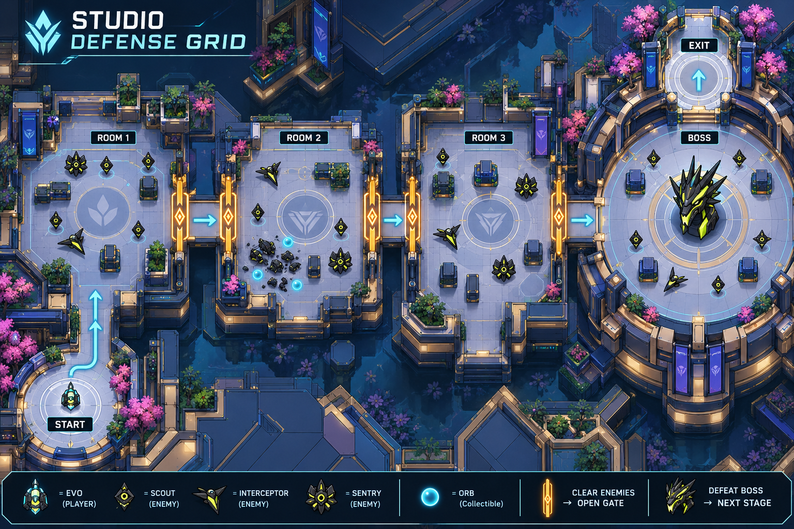
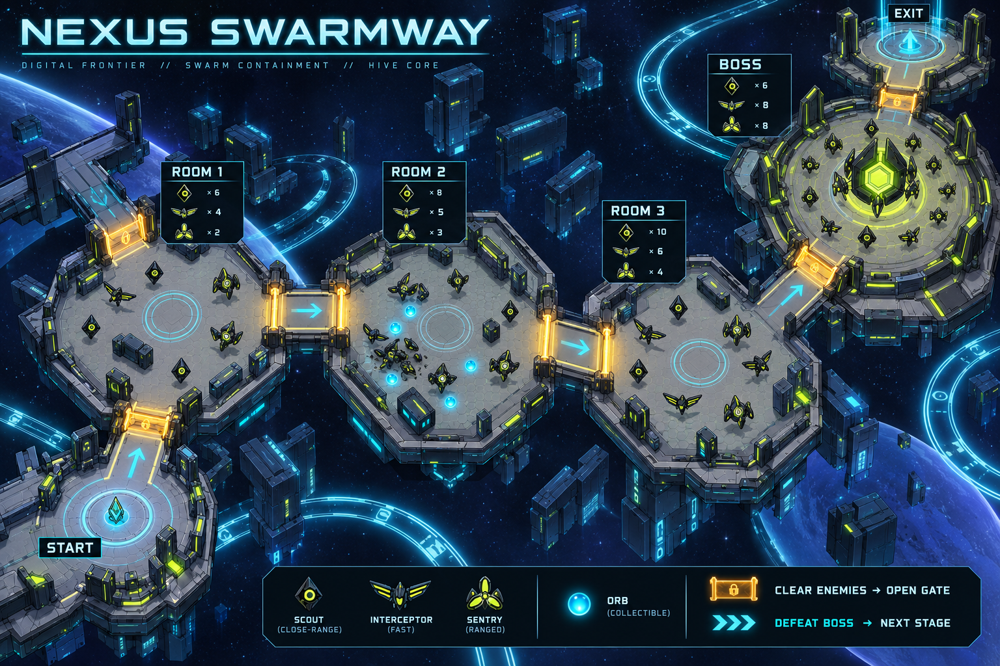
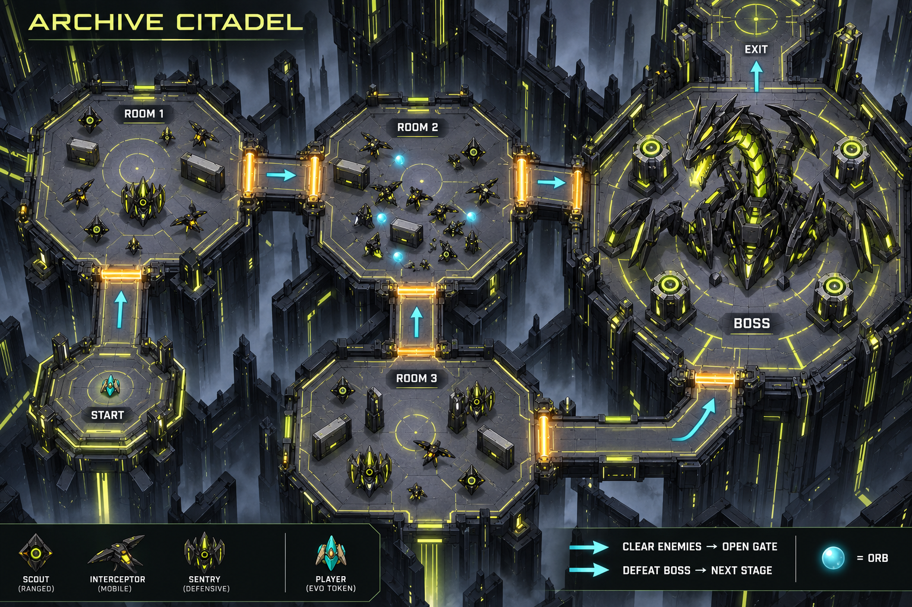

Answer correctly → power attacks → defeat Archives → collect orbs → clear the zone → open its gate → defeat the main boss → unlock the next stage.
Concept illustrations, not playable maps. Enemy counts are illustrative; use the documented 7:1 spawn rule. All rooms must clear before boss access. Gate logic and collision require implementation.


